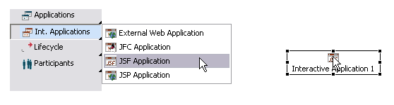
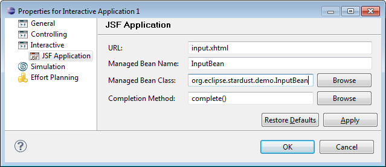

The interactive application type JSF Application provides the possibility to integrate JSF panels implemented activities to be executed in the Stardust Workflow Execution Perspective.
There are limitations when using JSF based backing beans. Refer to section Limitation on Using JSF Based Backing Beans for details and for a workaround to bypass these JSF based limitations.
To specify a JSF application in the Process Workbench:

Figure: Creating a JSF Application
Please refer to the chapter Specifying Applications for general questions about working with applications in the Process Workbench.
Double-click the application to open its properties dialog. On the right side of the panel click Interactive > JSF Application. Now set the properties for your JSF application:

Figure: Setting the JSF Applications Properties
This property is the URL of the JSF page as generated based on your XML layout specification. The URL is specified relative to the Web context and depending on the faces servlet, which leads to the following base URL structure:
http://host:port/webcontext/faces
That means, that if you would specify a URL /xhtml/test.xhtml in the JSF application properties dialog, the resource will be expected to be located at the following URL:
http://host:port/webcontext/faces/xhtml/test.xhtml
The name of the managed bean to be used for this JSF page, as it
can be defined in the faces-config.xml file, residing in the
The specified bean will be newly created in the JSF context, when the activity panel is opened. Henceforth the life cycle will depend on the scope defined in the faces configuration file. The bean usually will not be destroyed when the complete() method is called.
The fully qualified name of the bean implementation class.
The method to be called upon completion of the application. If, for example due to incorrect values, etc., an error occurs, it can be handled in the following ways:
In case pure JSF-based backing beans are used for JSF activities, backing beans and state are in session scope and stored in the same. This means that two activity panels displaying process data of activity instances of the same type sharing one backing bean and therefore the state. The last opened activity panel overwrites the state in the backing bean set by the activity panel open prior. Due to this behavior, not more than one activity panel for an activity instance of the same type at the same time should be opened.
To bypass this JSF limitation, the Stardust provides means to define a more fine grained scope for JSF backing beans, which assures that each activity panel uses a backing bean with its own state. To use this, it is required to expose the JSF-based backing beans as Spring beans and define the "portalTab" scope explicitly for each.
<?xml version="1.0" encoding="UTF-8"?>
<beans xmlns="http://www.springframework.org/schema/beans"
xmlns:aop="http://www.springframework.org/schema/aop" xmlns:xsi="http://www.w3.org/2001/XMLSchema-instance"
xmlns:ippui="http://infinity.com/bpm/ui/common/uiDefinition"
xsi:schemaLocation="
http://www.springframework.org/schema/beans http://www.springframework.org/schema/beans/spring-beans-2.5.xsd
http://www.springframework.org/schema/aop http://www.springframework.org/schema/aop/spring-aop-2.5.xsd">
<bean name="DisplayDataBean" class="org.eclipse.stardust.engine.api.web.jsf.beans.DisplayDataBean" scope="portalTab" />
</beans>